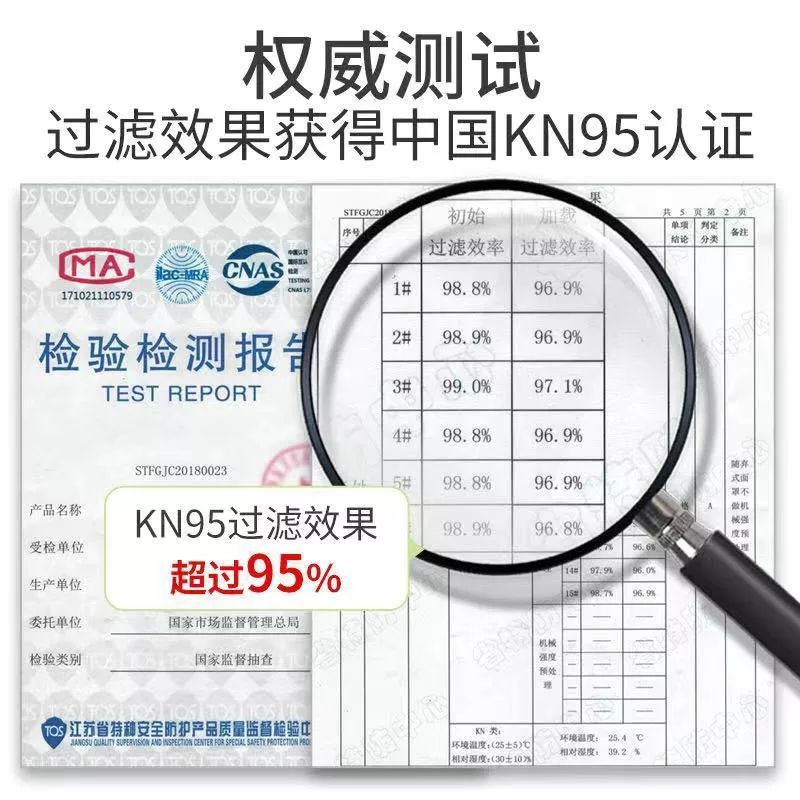

口罩每天产800万只，厂商疯狂加班生产
原文链接 备份链接 *************▲************* 广州南站提着大包小波的乘客，其中大部分人佩戴上了口罩。（南方周末记者 翁洹/图) 全文共*3883*字，阅读大约需要8分钟 中国是世界最大的口罩生产国，最大产能可 …


口罩成为了我们救命的稻草。
到处都在缺口罩、抢口罩，但口罩仍然相当紧缺。这个时候，却有一些商家和个人，靠着国难大发横财，贩卖各种假口罩、不合格的口罩，或者趁机哄抬口罩价格。
虽然淘宝、微信都开通了举报渠道，国家也在大力打击，但当我收到一包简陋的“三无”N95口罩时，我发现这些渠道的举报效果并不好。一个小小的口罩，反映出时代的众生相。
我想这样的例子仍有很多，但我们还是可以力所能及地做一些事情。下面是我和假口罩的故事。

坎坷举报路
1月23号，我分别在淘宝下了两个订单。一单是“KN95防病菌呼吸阀口罩”，158元20个，平均8元一个；另一单是“医用口罩一次性透气病菌鼻炎卫生无菌加厚三层口罩”。全是顺丰发货。因为抢到了这批口罩，当时离家很近的药店还有口罩的时候我没去囤货。
分别在29号和30号，我收到了两单口罩，虽然慢了点，但疫情期间，都能理解，但打开包裹时吓了一跳——这是什么神秘的口罩！
所谓的KN95口罩，只有透明塑料袋做了简易包装，就直接装在快递袋里。收到的口罩有白、灰、黑三个颜色，有的包装袋上写着“折叠随弃式防尘口罩”，有的包装上什么也没有。

作者收到的“三无”N95口罩，有的包装袋上写着“折叠随弃式防尘口罩”，有的包装上什么也没有
就口罩本身来说，上面也什么标识也没有，同个口罩上，只有一边印着“KN95”，另一边印着“PM2.5”。
想起不久前在网上看到有人贩卖回收口罩，面对这样的“三无”产品，心里难免害怕，于是我打开商品链接页，想看看其他收到的用户都有什么样的反馈。
链接页上原来卖N95口罩的选项已经不在，现在卖的是其他口罩商品。我点进评论，发现其他消费者和我的疑惑是相似的：收到的口罩颜色不一、品牌混乱、数目不对，还有很多“三无”口罩。
_“全是普通防尘口罩。_”
_“没有外包装，没有生产编号，没有生产日子，没有厂商，没有厂址，没有防护标准，听家人说甚至有几个已经发霉了。_”
_“跟新闻上曝出来的一模一样，都放起来包好，一个也不用了，浙江义乌口罩黑作坊，自己去搜。_”
甚至还有人收到的口罩上印着“赠品”“999感冒灵”。

口罩上，一边印着“KN95”，另一边印着“PM2.5”
于是我去和商家沟通，要求退款不退货，商家坚持只能“七天无理由”退货退款。外面如此危险，而且我家的小区都封了，快递进不来，为了退假口罩，我还得浪费个真口罩？退货后商家再把假口罩卖给别人怎么办？
在和淘宝客服反复沟通的过程中，我说我要打110举报了，商家干脆直接打来电话，对“三无”口罩的解释是：为了尽快满足广大消费者，商家来不及等工厂把标识印好就直接发货了，之后会在产品页上公告广大消费者。
等了几天没等到商家的公告，再询问淘宝客服，客服发来“检验检测报告”，仍坚持他们卖的是正品。让人疑惑的是，这家注册于大连的公司，生产厂家在安徽，拿的却是江苏的检测报告。淘宝客服对此的解释是：“这是国家安排的，不是我们可以控制的。”
在我的反复质询下，商家退了款，但假口罩问题仍然让人担心：如果别人买到了怎么办？
我决定走淘宝、天猫投诉，因为淘宝在微博上承诺“会在第一时间展开调查和处理”。然而，天猫投诉客服根本没人接，淘宝的举报通道也没有效果。我在淘宝上联系了其他给予差评的买家，其他人表示也举报了此商家但未得到淘宝回复。

商家提供的“权威证书”
最后，我决定拨打12315。
商家的手机号码显示的是天津，寄送地址显示的是“天津天津市西青区宣城市宣州工业园区”。我先拨打了天津12315，天津说这个地方其实是在安徽宣州，此时我才注意到这个寄送地址的奇怪之处。我又拨打了宣州的12315，但因为没有商家准确地址他们无法处理。
后来我从淘宝店铺的“企业资质”一栏获得了商家在大连的地址和电话，并拨打大连当地12315投诉。因为自己不常接到电话，为了防止漏接，我向12315另外提供了家人的电话。
几天后，我并未接到12315打来的电话，相反接到了淘宝商家的电话。奇怪的是，他们打的竟然是我留给12315的家人的电话。显然，我的信息被泄露了。
我再次拨打12315询问情况，得到的回复竟然是因为我没要求保密，但对方表示，此事正在处理中。

淘宝公布的部分不良商家
我又拨打商家电话，商家也承认了是工商局给了他们我的电话，让他们和消费者沟通、道歉。商家态度挺好，承认口罩质量确实有点问题，仍坚持没有贩卖假口罩，同时商家说自己也在配合工商局的调查，还说给我发50元红包当“道歉费”，我当然是不要的。
那么接下来，就交给工商局处理，并等待12315的结果了。清者自清，浊者自浊。
另外，我收到的“医用口罩一次性透气病菌鼻炎卫生无菌加厚三层口罩”虽不能判断真伪，但口罩本身非常薄、包装简单、与商品图不符。因为“商品过期不存在”，我已经无法看到其他消费者的评论。我申请退款被拒绝，但几天后，商家自动将款项退回。

打击假口罩
自疫情爆发后，一罩难求，口罩问题层出不穷——销售商哄抬物价、生产商生产假冒伪劣产品。
在浙江义乌就有这样的新闻。1月25日，多名网友举报义乌有数个作坊生产不合格口罩，作坊非无菌车间、工人不带口罩、不戴正规口罩、现场卫生环境糟糕，并爆料有700万只假3M口罩将流向市场。
1月26日，执法人员现场查获“清轻”牌一次性口罩70箱，总计10万余只，无标识口罩11箱，共计5万余只。执法人员在另一处举报地点虽未发现生产作坊，但在待寄包裹中找到“康溪”牌KN95口罩45个。
1月27日义乌市公安局的通报，义乌一伙人因为涉嫌销售伪劣产品罪被警方依法刑拘。
我默默拿出我收到的KN95口罩比对了一下，口罩长相和视频中的义乌假口罩非常相似。
网传视频中，义乌小作坊正在生产不合格口罩
不只义乌，全国各地都在严查假冒伪劣口罩。
截至2月4日，佛山警方查获了一个正在生产假冒名牌口罩的地下工厂，查扣17.5万余个假口罩；
湖南长沙在三起案件中总共查处197万只假冒“飘安”口罩，其中有106万只口罩还是由某家具有二类医疗器械销售资质的商家经销，这些口罩几乎已经全部流入市场；
黑龙江共查扣伪劣口罩2万余个、过期医用手套5万副；
北京查获2万多只假冒3M口罩；
石家庄查扣“昱卓” “源美” “小狮子瑞恩”等成品口罩5万余只；
宁夏查获假冒“飘安”5万余只，其他还有假冒3M口罩、其他伪劣N95口罩和假冒橡胶手套若干；
江都破获一个制假团伙，共查获22万余个假冒3M口罩。
深圳一家在松岗街道东方工业二路283号一药店内，警方查获了来源不明、口罩上有明显污渍的口罩……
除了本地产制的假冒伪劣口罩，还有国外流入的不合格口罩，凡此种种，让人防不胜防。也在此提醒消费者，买口罩的时候不要盲目囤货，千万要当心选购。

友情考验
只有商家在卖假口罩？错了。微信朋友圈也在这次疫情中考验人性。
朋友S告诉我，她在朋友圈看到有人在卖N95口罩，22元一个，保证正品，只发湖南省。对方还是旅游博主。从图片上来看，散装口罩上印着N95字样，而且口罩长得很像一片卫生巾。对方声称，特殊时期为了赶工，因此没有独立包装。
朋友S和他理论，对方回答：“我卖这个并不是自己赚钱，是为救自己的公司，我们是本地城市电商，长沙属于疫情重灾区，我们公司业务基本凉凉，是让公司解散员工失业还是想办法做点其他的赚点钱把公司撑过去了，孰轻孰重，我心里自有安排！”
朋友S说要举报，对方就直接把他删了。

朋友圈中售卖的长得像一片卫生巾的假口罩
后来我在朋友圈也陆续看到有人卖口罩，其中还有一些国外口罩，作为普通消费者，实在真假难辨，价格在20到25元一个。
如果真的遇到卖假口罩发国难财的，微信也有小程序“腾讯110”可以举报。
口罩原本就是用来保护我们的，但却有人趁机发起了国难财，这种行为实在可耻。而比高价口罩更气人的，是贩卖假冒伪劣口罩，因为这是在害人。人可以不善良，但不能无耻。
现在包括微信、淘宝、12315、市场监管部门等很多渠道都可以举报假口罩，也许有些举报效果并不理想，但消费者仍可以通过多种渠道去举报、监督、跟进。杜绝假口罩的贩售，是在保护自己和他人。
当然，也希望各大平台和渠道都可以积极响应消费者投诉、加大打击力度。
作者 | 温棠
排版 | STAN
图片 | 部分来源于网络
南风窗新媒体出品

猜你还想看
围观
故事
热文
点击购买最新一期《南风窗》
原文链接 备份链接 *************▲************* 广州南站提着大包小波的乘客，其中大部分人佩戴上了口罩。（南方周末记者 翁洹/图) 全文共*3883*字，阅读大约需要8分钟 中国是世界最大的口罩生产国，最大产能可 …
原文链接 备份链接 1月29日，国家工信部有关负责人介绍，中国的口罩年产量占全球约50%，最大产能达每天2000多万只。根据口罩业内人士的估计，中国的实际产能肯定远超这个数字，但特殊时期，产能能否真正释放，又如何调配，都是巨大难题。 记 …
原文链接 备份链接 作者 | 王卓铭 编辑 | 张庆宁 出品 | 棱镜·腾讯小满工作室 欢迎下载腾讯新闻APP，阅读更多优质资讯 1月31日21:00，湖北省新型肺炎防控指挥部召开第九场新闻发布会。 武汉市委副书记、市长周先旺表示：“到 …
原文链接 备份链接 只用了8天的时间，一家淘宝店的日销售额从5000多元暴涨到9000多万元。这是新冠肺炎爆发后，疯狂膨胀并异化的口罩市场现状。 疫情突然袭来，口罩这个又小又简单的日用品，成了人们四处抢购的必需品。当药店、超市难以满足需 …
原文链接 备份链接 摄影记者 | 蔡小川 “女士们先生们，列车已经到达武汉站，请您按照先后顺序下车……” 广播响起来的时候，车厢里的气氛陡然升到了最高点。所有人的目光都转向了车窗外夜幕之下黑压压的城市。一个列车员从车厢一头飞奔过来。“前面 …